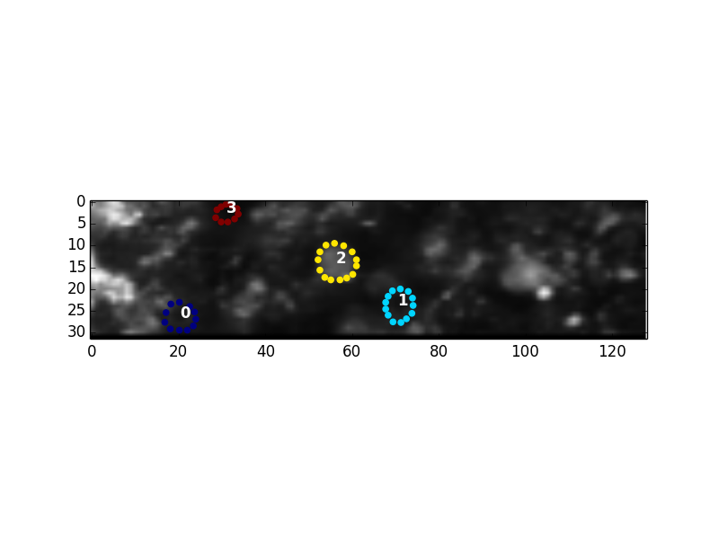
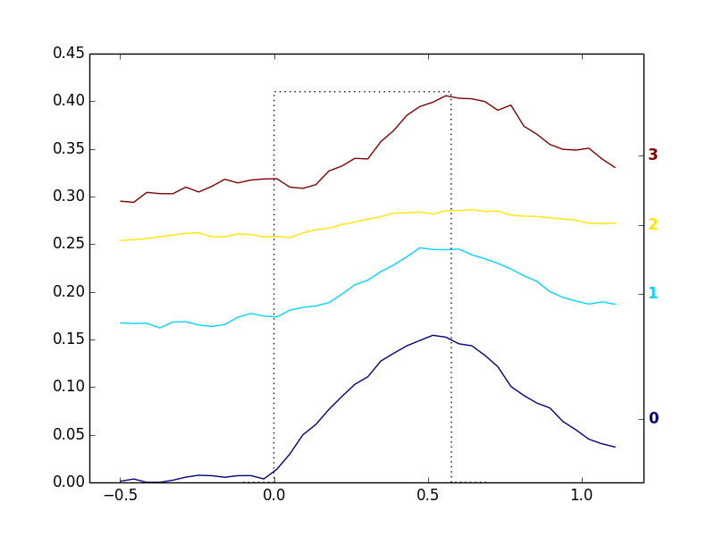

The pyfluo library enables easy and efficient manipulation of imaging data using a set of custom-built data structures and functions.
This project is hosted on github.
Note that pyfluo is a work in progress; neither the code nor the documentation is complete. That said, it is already functional for a wide variety of tasks.
The library only depends upon the standard python library, plus Numpy, Scipy, and Matplotlib.
Here is a quick-start example to get you moving with pyfluo.
1 2 3 4 5 6 7 8 9 10 11 12 13 14 15 16 17 18 19 20 21 22 23 24 25 26 27 28 29 30 31 32 33 34 35 36 37 38 39 40 41 42 43 44 45 46 47 48 49 50 51 52 | from pyfluo import MultiChannelTiff, Movie, LineScan
from pyfluo.fluorescence import compute_dff
from pyfluo.tiff import CHANNEL_IMG, CHANNEL_STIM
from pyfluo.io import save, load
import os
import numpy as np
import pylab as pl
pl.ion()
# reload previously saved data
globals().update(load('my_saved_data'))
# specify tif files to be loaded
dir_name = './lab-data/experiment-june25/'
names = [os.path.join(dir_name,file_name) for file_name in os.listdir(dir_name) if '500Hz' in file_name]
# load tif files
mct = MultiChannelTiff(names, skip=(10,0,0), klass=Movie) # this skipped the first ten frames of each tiff file
# mct = MultiChannelTiff(names, skip=(0,0,32), klass=LineScan) # this skipped every 32 lines in every tiff file
mov = mct[CHANNEL_IMG]
stim = mct[CHANNEL_STIM].flatten()
# play the movie
mov.play(fps=15)
# extract and align stimulation events from movie, then play result
mov_stims = mov.take(stim.stim_times, pad=(.5, .5), merge_method=np.mean)
mov_stims.play(loop=True)
# select some regions of interest & extract their signals
mov.select_roi(3)
signals = mov.extract_by_roi()
# compute delta-f over f of signals
dff = compute_dff(signals)
# extract and align stimulation events from signals
dff_stims = dff.take(stim.stim_times, pad=(.5,.5))
# plot the result
dff_stims.plot(stim=stim.example)
# show the regions corresponding to plot
pl.figure()
mov.z_project(show=True, rois=True)
# save the figures
pl.savefig('rois.png')
pl.figure(1)
pl.savefig('dff_aligned.png')
# and the data
save('my_new_data', dff=dff, stim=stim)
|
Shown below are examples of rois.png (left) and dff_aligned.png (right).
 {kind=link}
{kind=link}